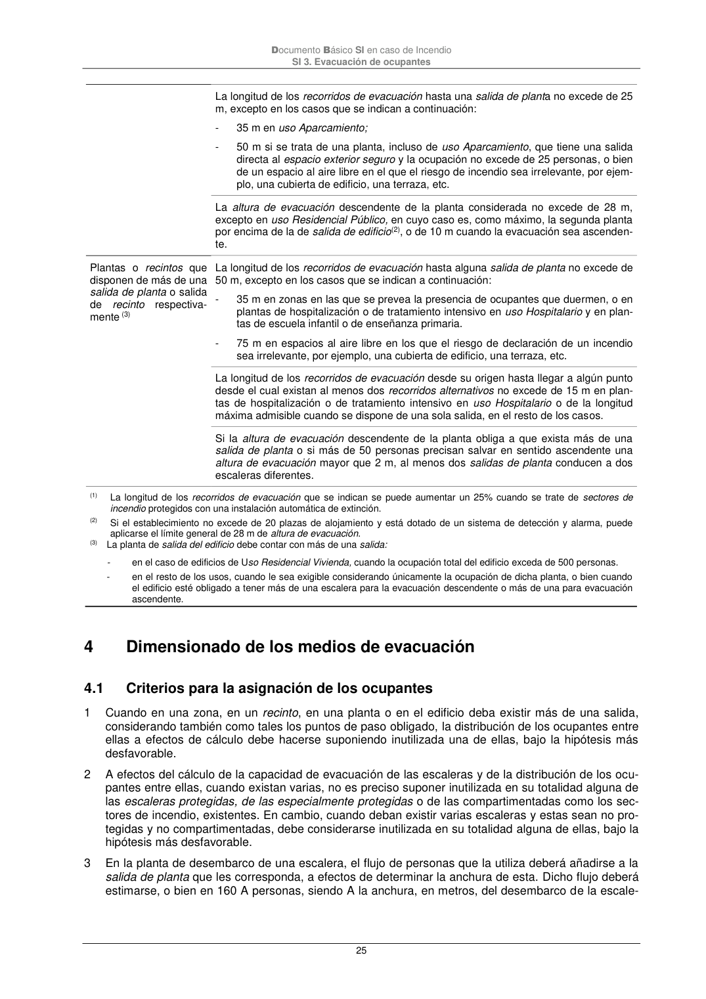

DB-SI · 4 Dimensionado de los medios de evacuación · 4.1 Criterios para la asignación de los ocupantes · versión 2025-03-04
SHA256: 0a2e78cd62471d9cc5cfe2efbc6aa39fdbad73c124aea7b039f9de96c141e105 · página física 25 de 92 · métodos de encabezado
solo si están cotejados.
Formatos: Markdown · JSON de bloques · PDF p. 25 · imagen PNG
Documento Básico SI en caso de Incendio SI 3. Evacuación de ocupantes 25 La longitud de los recorridos de evacuación hasta una salida de planta no excede de 25 m, excepto en los casos que se indican a continuación: - 35 m en uso Aparcamiento; - 50 m si se trata de una planta, incluso de uso Aparcamiento, que tiene una salida directa al espacio exterior seguro y la ocupación no excede de 25 personas, o bien de un espacio al aire libre en el que el riesgo de incendio sea irrelevante, por ejem- plo, una cubierta de edificio, una terraza, etc. La altura de evacuación descendente de la planta considerada no excede de 28 m, excepto en uso Residencial Público, en cuyo caso es, como máximo, la segunda planta por encima de la de salida de edificio(2), o de 10 m cuando la evacuación sea ascenden- te. Plantas o recintos que disponen de más de una salida de planta o salida de recinto respectiva- mente (3) La longitud de los recorridos de evacuación hasta alguna salida de planta no excede de 50 m, excepto en los casos que se indican a continuación: - 35 m en zonas en las que se prevea la presencia de ocupantes que duermen, o en plantas de hospitalización o de tratamiento intensivo en uso Hospitalario y en plan- tas de escuela infantil o de enseñanza primaria. - 75 m en espacios al aire libre en los que el riesgo de declaración de un incendio sea irrelevante, por ejemplo, una cubierta de edificio, una terraza, etc. La longitud de los recorridos de evacuación desde su origen hasta llegar a algún punto desde el cual existan al menos dos recorridos alternativos no excede de 15 m en plan- tas de hospitalización o de tratamiento intensivo en uso Hospitalario o de la longitud máxima admisible cuando se dispone de una sola salida, en el resto de los casos. Si la altura de evacuación descendente de la planta obliga a que exista más de una salida de planta o si más de 50 personas precisan salvar en sentido ascendente una altura de evacuación mayor que 2 m, al menos dos salidas de planta conducen a dos escaleras diferentes. (1) La longitud de los recorridos de evacuación que se indican se puede aumentar un 25% cuando se trate de sectores de incendio protegidos con una instalación automática de extinción. (2) Si el establecimiento no excede de 20 plazas de alojamiento y está dotado de un sistema de detección y alarma, puede aplicarse el límite general de 28 m de altura de evacuación. (3) La planta de salida del edificio debe contar con más de una salida: - en el caso de edificios de Uso Residencial Vivienda, cuando la ocupación total del edificio exceda de 500 personas. - en el resto de los usos, cuando le sea exigible considerando únicamente la ocupación de dicha planta, o bien cuando el edificio esté obligado a tener más de una escalera para la evacuación descendente o más de una para evacuación ascendente. 4 Dimensionado de los medios de evacuación 4.1 Criterios para la asignación de los ocupantes 1 Cuando en una zona, en un recinto, en una planta o en el edificio deba existir más de una salida, considerando también como tales los puntos de paso obligado, la distribución de los ocupantes entre ellas a efectos de cálculo debe hacerse suponiendo inutilizada una de ellas, bajo la hipótesis más desfavorable. 2 A efectos del cálculo de la capacidad de evacuación de las escaleras y de la distribución de los ocu- pantes entre ellas, cuando existan varias, no es preciso suponer inutilizada en su totalidad alguna de las escaleras protegidas, de las especialmente protegidas o de las compartimentadas como los sec- tores de incendio, existentes. En cambio, cuando deban existir varias escaleras y estas sean no pro- tegidas y no compartimentadas, debe considerarse inutilizada en su totalidad alguna de ellas, bajo la hipótesis más desfavorable. 3 En la planta de desembarco de una escalera, el flujo de personas que la utiliza deberá añadirse a la salida de planta que les corresponda, a efectos de determinar la anchura de esta. Dicho flujo deberá estimarse, o bien en 160 A personas, siendo A la anchura, en metros, del desembarco de la escale-
